Inspecting Default ADFS Identity Provider Initiated Sign On Page with Fiddler and Wireshark
I recently created an Azure Resource Manager (ARM) template to learn how to set up an Active Directory Federation Service (ADFS) server. After the deployment, I wanted to learn more about the processes to authenticate a user via the ADFS server and test whether or not authentication was even working before creating a trust with an external service provider (i.e. Microsoft 365).
In this post, I will show you how to use fiddler and Wireshark to inspect the network traffic generated while accessing and providing credentials to the default Identity Provider (Idp) Initiated Sign on page on-prem.
Requirements
- An Active Directory (AD) Environment with a Domain Controller (DC), ADFS server and a domain joined computer: You can deploy all that in less than 30 minutes with this ARM template from the project Blacksmith.
- On the Domain Joined Computer:
- Install Fiddler Classic
- Install Fiddler extension based on the Kerberos.NET library : Download
setup.exeand run it.
- On the ADFS Server:
- Install Wireshark
Validate ADFS Server Setup (Client Side)
One easy way to validate that the federation services are running an handling kerberos authentication is by browsing to https://<ADFS FQDN>/adfs/ls/IdpInitiatedSignon.aspx and entering domain credentials (replace <ADFS FQDN> with the URL of your ADFS server. Not the name of the ADFS server at all).
- Log on (RDP) to domain joined endpoint
- Open broser and go to
https://<ADFS FQDN>/adfs/ls/IdpInitiatedSignon.aspx- Verify if
EnableIdpInitiatedSignonPageis set toTrue(Run command on ADFS server via PowerShell)
Get-AdfsProperties | select-object EnableIdpInitiatedSignonPage- If property is set to
False, run this command (on ADFS Server) to enable it and restart the ADFS service
Set-AdfsProperties -EnableIdpInitiatedSignonPage $true Restart-Service -Name adfssrv - Verify if
- Enter domain user and credentials!
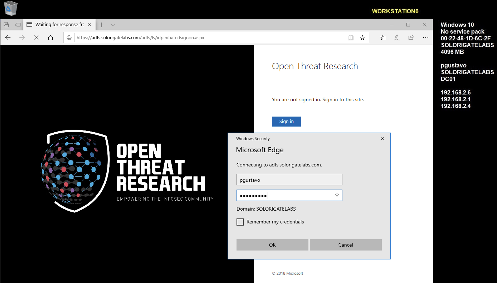
- If everything is working properly (at least on-prem), you will get the
You are signed inmessage
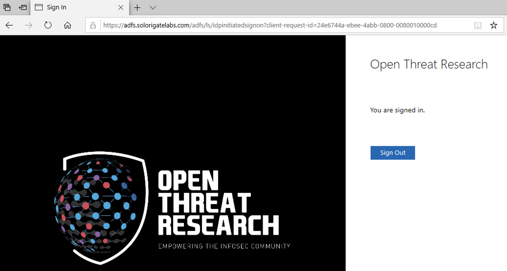
That was very easy right? Now, are you also wondering what actually happens between the domain joined computer, the ADFS server and the DC server when all this happens? (Network perspective)
Disable Extended Protection for Authentication (ADFS Server)
In order to avoid continuous credentials prompt while authenticating and capturing/proxying traffic with fiddler, we need to disabke the Disable Extended Protection for Authentication property in the ADFS server.
- Log on to ADFS Server
- Open PowerShell as Administrator and run the following commands
Get-AdfsProperties | select ExtendedProtectionTokenCheck
Set-ADFSProperties -ExtendedProtectionTokenCheck:None
Restart-Service -Name adfssrv
Get-AdfsProperties | select ExtendedProtectionTokenCheck
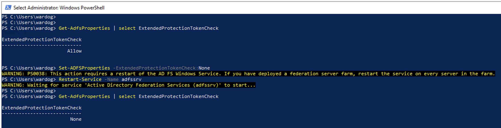
Set Up Fiddler (Client Side)
- Log on (if you disconnected) to domain joined computer
- Open fiddler
- Enable
Decrypt HTTPS trafficoption in Tools > Options > HTTPs - Trust the fiddler root certificate
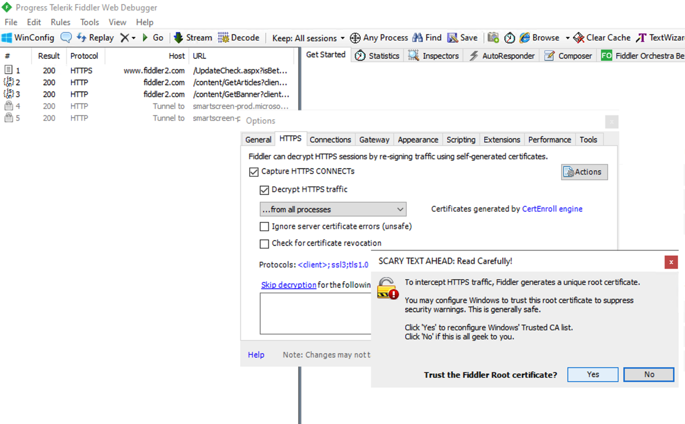
- Enable Microsoft Edge to send network traffic to the local computer (AppContainer Loopback Exemption). WinConfig > Microsoft Edge > Save Changes

- Make sure you are capturing traffic and that the
Kerberosextension is available under theInspectorsoptions. You can simply open Microsoft Edge and go to any site (just to generate traffic and not to validate Kerberos parsers)
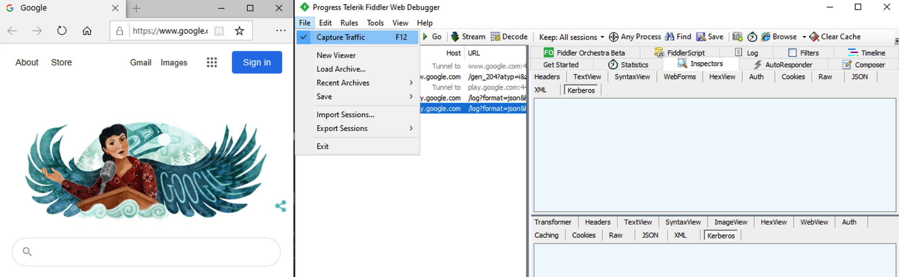
- Close browser and remove all sessions captured by Fiddler. Getting ready!

Set Up Wireshark (ADFS Server)
It seems that our ADFS server handles the authentication with the AD DC on behalf of the domain user. Therefore, we can validate that thought with wireshark and filter on interactions with the IP addresses of the AD DC and domain joined computer.
- Open Wireshark on the ADFS server and apply the following filter:
ip.addr == <DC IP Address> or ip.addr == <Domain Joined Computer IP Address>

Open Edge from Fiddler and Filter Web Browser Only (Client Side)
- On your domain joined computer, open Microsoft Edge from fiddler

- Filter traffic to only capture from web browsers
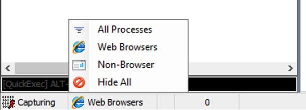
Browse to ADFS Sign On Page (Client Side)
- Once again, go to
https://<ADFS FQDN>/adfs/ls/IdpInitiatedSignon.aspxand click onSign In

Enter Domain Credentials
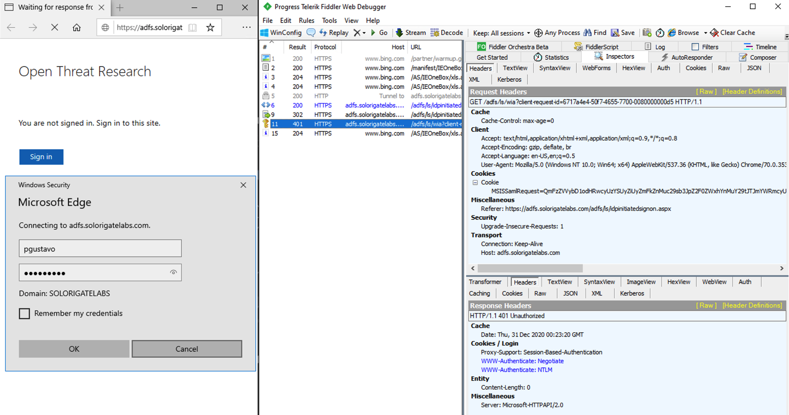
You will see a few events captured by fiddler. I recommend to filter the results on the specific microsoftedgecp process that handled the authentication as shown below:

You will also see a few events in Wireshark (ADFS Server). I am interested in the KRB5 protocol ones as shown below

Stop fiddler and wireshark captures. Time to learn a little bit more about this process
So, What Happened? Let’s Dive Into It!
1. Access ADFS Sign On Page
Client Connects to the ADFS server via https://adfs.solorigatelabs.com/adfs/ls/idpinitiatedsignon.aspx . Here is where we get to the Open Threat Research banner with the option to Sign In and the message You are not signed in. Sign in to this site. Nothing special. Just a simple GET request to get to ADFS sign on page.
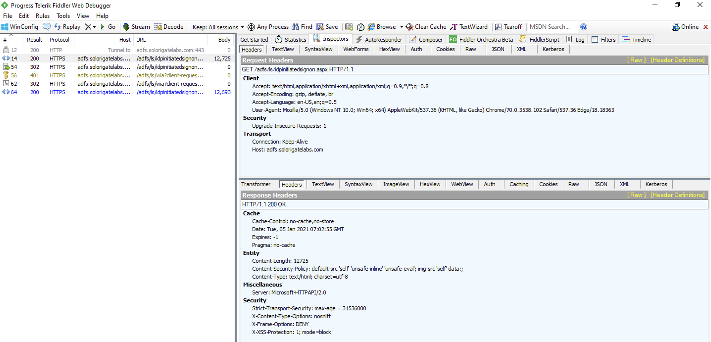
2. Redirection to ADFS Server and SamlRequest Generation
Client clicks on the Sign In button. That click makes a POST request to POST https://adfs.solorigatelabs.com/adfs/ls/idpinitiatedsignon.aspx?client-request-id=6717a4e4-50f7-4655-7700-0080000000d5.
The ADFS server receives the requests and returns a 302 Response Code with some information about where to go. It sets the new Location to https://adfs.solorigatelabs.com:443/adfs/ls/wia?client-request-id=6717a4e4-50f7-4655-7700-0080000000d5 where we can see the use of Windows Integrated Authentication (WIA) which is used for authentication requests that occur within the organization’s internal network (intranet) for any application that uses a browser for its authentication.
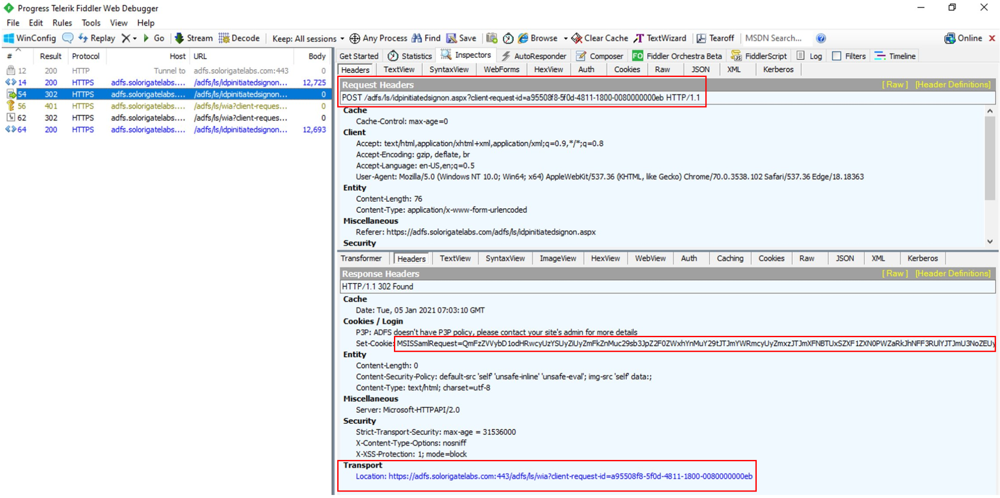
One thing also that was provided in the 302 Redirect Message was a MSISSamlRequest cookie which contained the SamlRequest. A SamlRequest tells the browser to send the request to the preconfigured identity provider.
This was the MSISSamlRequest cookie (Base64 Encoded)
QmFzZVVybD1odHRwcyUzYSUyZiUyZmFkZnMuc29sb3JpZ2F0ZWxhYnMuY29tJTJmYWRmcyUyZmxzJTJmXFNBTUxSZXF1ZXN0PWZaRk5TOFF3RUliJTJmU3NrOVRacnRyalowQzhVaUZQVGlpZ2N2a3FaVE41QW1OWk9LUDk5JTJiSE1XOUR1OHo3enhNaVdxMGs2em5lSFV2OERVRHhxUnR6dVRqZUJJOW5JNkNacmtTTkIlMmJnb04wOTExVG9vUURkM1hVRHowbnlCZ0dOZDJjaVVrNlNGbkdHMW1GVUxpNGpMampOQkQxa3I1eExjWkNDcDFtUnZaT2tXVnFNVTNFanJ6Rk9LQmxUJTJmWUFwZXV1RCUyYlZRUnJPb3cxWDdjNXN3aUk4bURkd2pyNWprNDZSVWFsRTZOZ0RKcWVhbWZuJTJiUnloTlI3U000T0o5Qm1NTkNUNUdlMER1V21lcHVlZ285ZWUwdXFjcE1KTzNvYlVvZ1FWaGxTclRLTFM5MDhYdjUxV2NMZlJnT3lHR2FNSmR1THFwTDlmVVgxQ3clM2QlM2RcUHJvdG9jb2xCaW5kaW5nPXVybiUzYW9hc2lzJTNhbmFtZXMlM2F0YyUzYVNBTUwlM2EyLjAlM2FiaW5kaW5ncyUzYUhUVFAtUmVkaXJlY3RcU2lnbmF0dXJlPVZSTklyRWklMmJWY1hUSHZMNXRRdUEyeHpSZHdieng2dllCcnNwMWd1NHRPNGlENFQxWUhmYVFkUW4lMmJuVzFBdHd0WWloTTludSUyZkNWQ3Njc3pad2xCQTJhcm5SUm9Xd2JiamclMmJLN3VyY3NrMDVTOFNndVJRM2xTbiUyZnY1b082UmRLTnFmUFFFdm00WHFEeUpReExKbVVkNHkwZDFCQnBGNGR1ekFyN1MyWkhTWmJhN1NqUkRNRk4xJTJmWjhyY1A2UTFrZHp1eVBZb3JkeDBxdTFOQjhpbjlLelByJTJib0w5aWRKWmklMmJKNHNVN0xjQzExcjFyNkk1OE4lMmZnMUNGUCUyZmF2MFpRJTJmZU1pZU5NMEtLWWljZUNla25HUWxtVTN6dWl6aGZpVEFaVU5uRSUyYlVvc2lCbFlsNTAlMmYlMmIwa2hTSjNYbDBjVW1uVjE4b1BSb1FpMG9ZOWh0Uk9QY09Vb3clM2QlM2RcU2lnQWxnPWh0dHAlM2ElMmYlMmZ3d3cudzMub3JnJTJmMjAwMSUyZjA0JTJmeG1sZHNpZy1tb3JlJTIzcnNhLXNoYTI1NlxRdWVyeVN0cmluZ0hhc2g9TiUyZkNHa3l3T3hSUmF3bXdnVTZtREhlNmh2VE5lQkxLQkdyMHNZMmRpcHg0JTNk
After base64 decoding that, we can get to the Url encoded value of BaseUrl which contains the SamlRequest
BaseUrl=https%3a%2f%2fadfs.solorigatelabs.com%2fadfs%2fls%2f\SAMLRequest=fZFNS8QwEIb%2fSsk9TZrtrjZ0C8UiFPTiigcvkqZTN5AmNZOKP99%2bHMW9Du8z7zxMiWq0k6zneHUv8DUDxqRtzuTjeBI9nI6CZrkSNB%2bgoN0911TooQDd3XUDz0nyBgGNd2ciUk6SFnGG1mFULi4jLjjNBD1kr5xLcZCCp1mRvZOkWVqMU3EjrzFOKBlT%2fYApeuuD%2bVQRrOow1X7c5swiI8mDdwjr5jk46RUalE6NgDJqeamfn%2bRyhNR7SM4OJ9BmMNCT5Ge0DuWmepuego9ee0uqcpMJO3obUogQVhlSrTKLS908Xv51WcLfRgOyGGaMJduLqpL9fUX1Cw%3d%3d\ProtocolBinding=urn%3aoasis%3anames%3atc%3aSAML%3a2.0%3abindings%3aHTTP-Redirect\Signature=VRNIrEi%2bVcXTHvL5tQuA2xzRdwbzx6vYBrsp1gu4tO4iD4T1YHfaQdQn%2bnW1AtwtYihM9nu%2fCVCscszZwlBA2arnRRoWwbb
After Url decoding everything, we get to the SamlRequest base64 encoded value as shown below:
fZFNS8QwEIb/Ssk9TZrtrjZ0C8UiFPTiigcvkqZTN5AmNZOKP99+HMW9Du8z7zxMiWq0k6zneHUv8DUDxqRtzuTjeBI9nI6CZrkSNB+goN0911TooQDd3XUDz0nyBgGNd2ciUk6SFnGG1mFULi4jLjjNBD1kr5xLcZCCp1mRvZOkWVqMU3EjrzFOKBlT/YApeuuD+VQRrOow1X7c5swiI8mDdwjr5jk46RUalE6NgDJqeamfn+RyhNR7SM4OJ9BmMNCT5Ge0DuWmepuego9ee0uqcpMJO3obUogQVhlSrTKLS908Xv51WcLfRgOyGGaMJduLqpL9fUX1Cw==
After base64 decoding that string, we can get its XML format (AuthnRequest message)
<?xml version="1.0"?>
<samlp:AuthnRequest xmlns:samlp="urn:oasis:names:tc:SAML:2.0:protocol" ID="_562de652-14a2-4fe9-b80c-2cf9ecb7bf04" Version="2.0" IssueInstant="2020-12-31T00:23:20.191Z" Destination="https://adfs.solorigatelabs.com/adfs/ls/" Consent="urn:oasis:names:tc:SAML:2.0:consent:unspecified">
<Issuer xmlns="urn:oasis:names:tc:SAML:2.0:assertion">http://ADFS.solorigatelabs.com/adfs/services/trust</Issuer>
</samlp:AuthnRequest>
This message contains details needed by the ADFS server (Identity Provider) to process the user authentication. You can also decode all those string with tools from here https://www.samltool.com/online_tools.php.
3. Enter Credentials in Logon Form
After the previous redirection, the client receives a 401 Response Code. This is simply telling the client to authenticate against the ADFS server (Identity Provider). Here is where we entered our domain credentials User:pgustavo.

4. Kerberos Authentication
The Identity Provider decodes the SAMLRequest and performs the user authentication via Kerberos.
AS-REQ
ADFS server handles the authentication process and sends an AS-REQ message to the domain controller on behalf of the domain user that is trying to authenticate.
- User being authenticated: pgustavo
- Service requested: krbtgt
- Host Address: ADFS01 Server
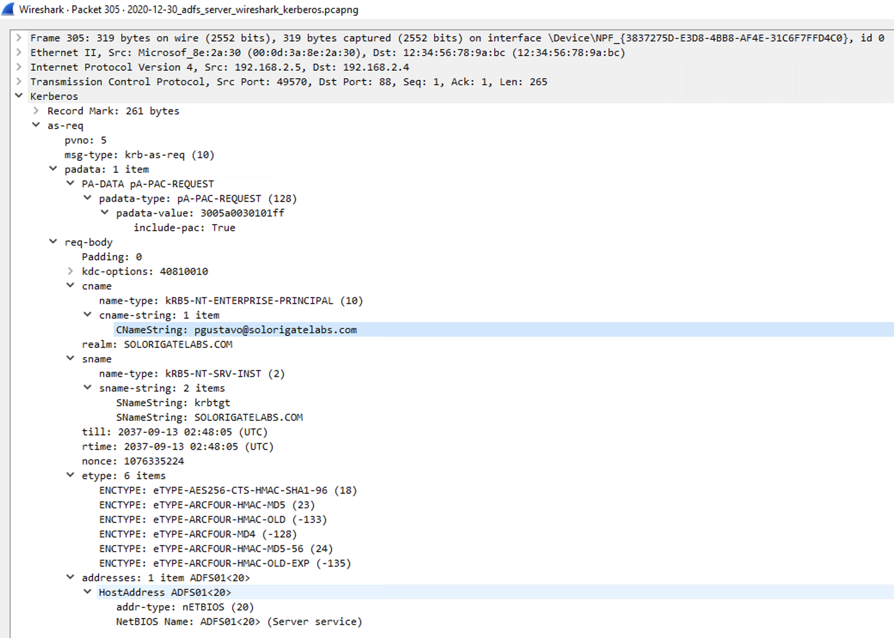
PREAUTH_REQUIRED
Kerberos Pre-Authentication is a security feature which offers protection against password-guessing attacks. The AS request identifies the client to the KDC in Plaintext. If Kerberos Pre-Authentication is enabled, a Timestamp will be encrypted using the user’s password hash as an encryption key.
Error Code: 25 - HEX -> 0x19 (Source)
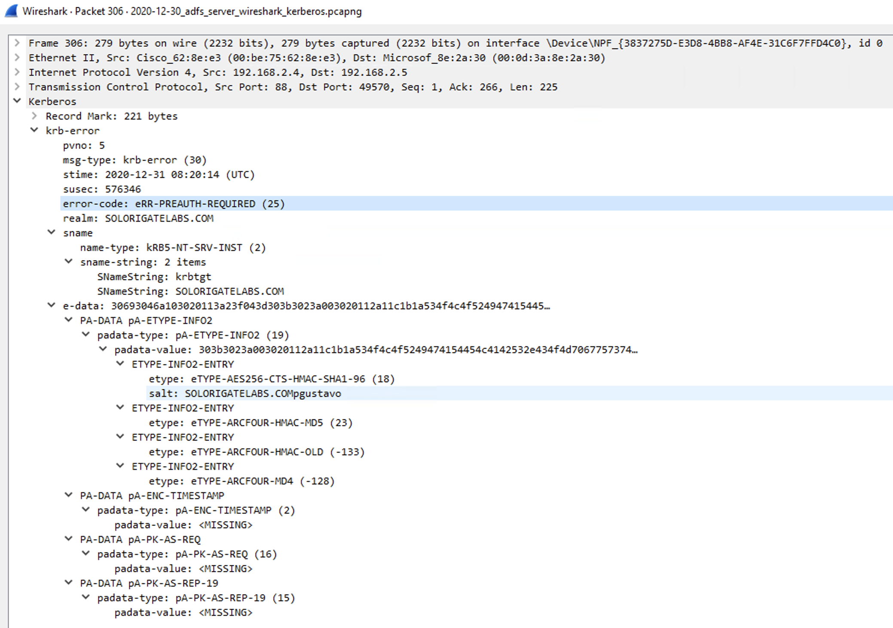
TCP connection closes!
S4U2self TGS Exchange (Delegation) - TGS-REQ
S4U2Self delegation sub-protocol is used by the ADFS service to obtain a ticket for pgustavo
In a KRB_TGS_REQ and KRB_TGS_REP subprotocol message sequence, a Kerberos principal uses its ticket-granting ticket (TGT) to request a service ticket to a service. The TGS uses the requesting principal’s identity from the TGT passed in the KRB_TGS_REQ message to create the service ticket.
In the S4U2self TGS exchange subprotocol extension, a service requests a service ticket to itself on behalf of a user. The user is identified to the KDC by the user name and user realm. Alternatively, the user might be identified using the user’s certificate.
The service uses its own TGT and adds a new type of padata. This is why we did not get another AS-REQ and AS-REP to get a TGT.
If the service possesses the user certificate, it can obtain a service ticket to itself on that user’s behalf using the S4U2self TGS exchange subprotocol extension, with a new padata type PA-S4U-X509-USER (ID 130)
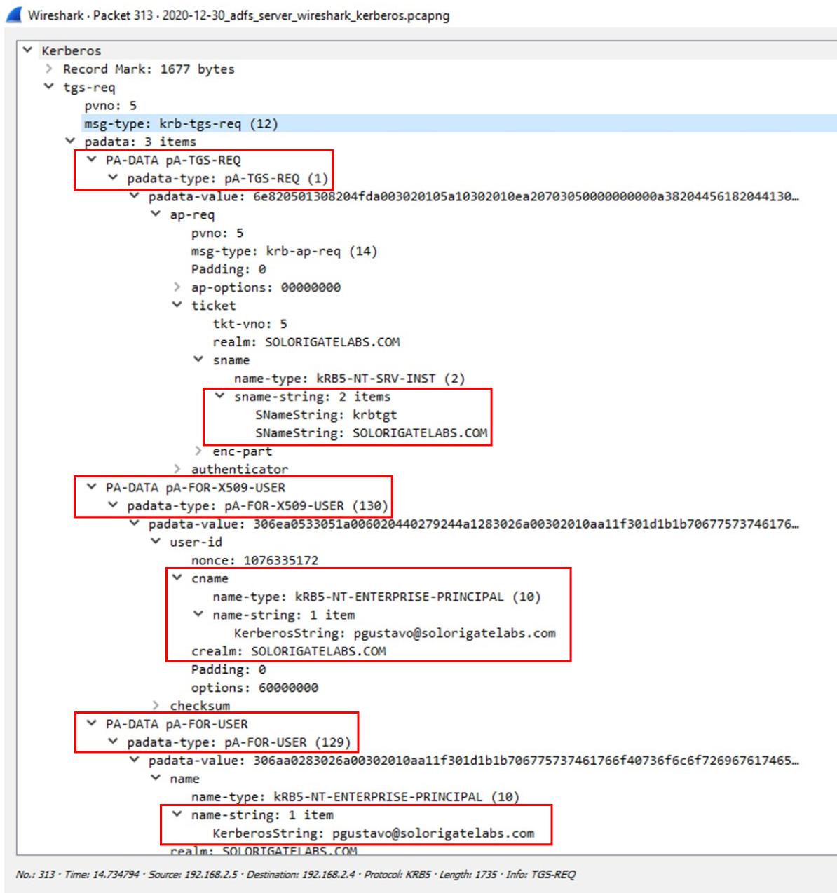
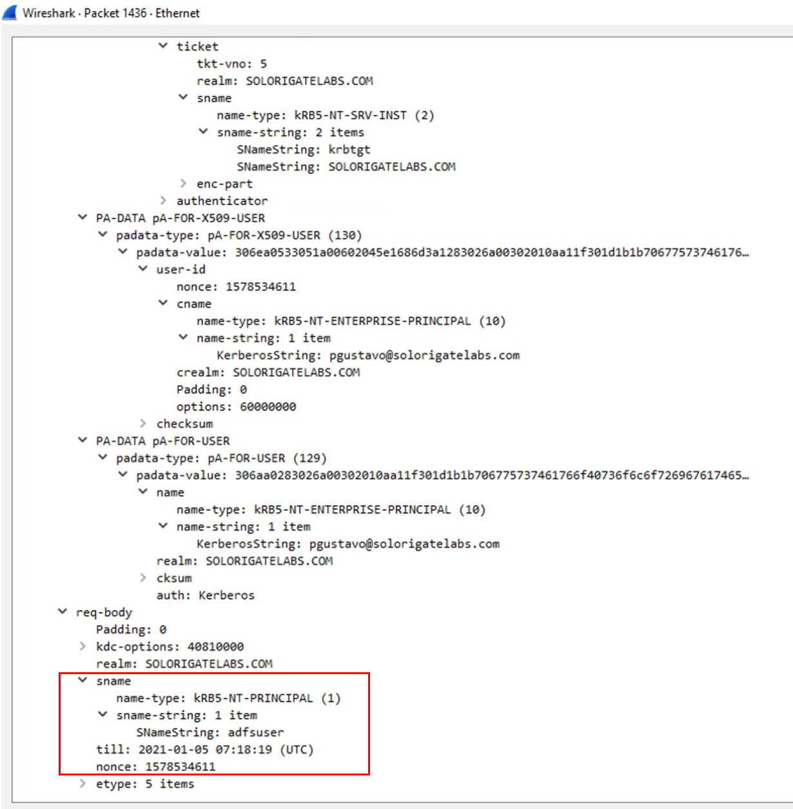
S4U2self TGS Exchange (Delegation) - TGS-REP
The ADFS service gets a ticket that describes the user pgustavo

We coul also validate the step where pgustavo sent an AP-REQ . This is parsed by the Kerberos extension.
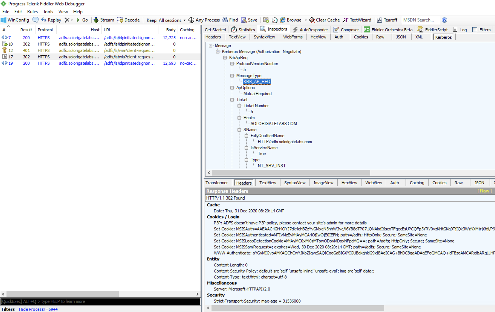
4. Successful Authentication & Authentication Cookies
A final redirection occurs since we are simply authenticating against the ADFS server to validate we can authenticate. There are no service providers set up.
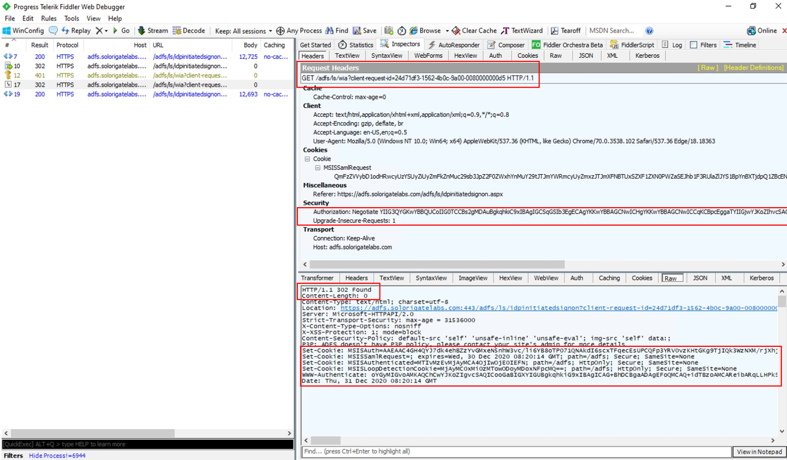
We also finally get “Authentication Cookies” such as MSISAuth
The MSISAuth (MSISAuth + MSISAuth1 + …) are the encrypted cookies used to validate the SAML assertion produced for the client. The cookie is used for subsequent authentications against the ADFS. These are what we call the “authentication cookies”, and you will see these cookies ONLY when AD FS 2.0 is the IdP. Without these, the client will not experience SSO.

Final Diagram!
After going through all those steps, I put together this image to summarize the main steps. This is going to help me as a reference for when I add service providers.
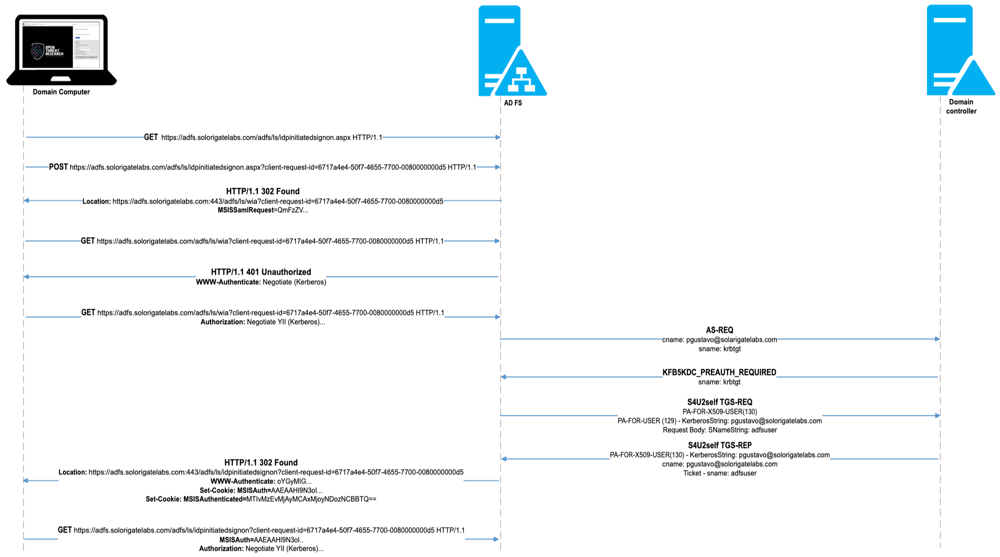
That’s it! I hope you enjoyed this post and helps you as a reference for other projects!
References
- https://syfuhs.net/a-fiddler-extension-for-kerberos-messages
- https://github.com/dotnet/Kerberos.NET
- https://docs.microsoft.com/en-us/windows-server/identity/ad-fs/troubleshooting/ad-fs-tshoot-initiatedsignon
- https://docs.microsoft.com/en-us/windows-server/identity/ad-fs/technical-reference/understanding-key-ad-fs-concepts
- https://medium.com/@robert.broeckelmann/active-directory-federation-services-adfs-and-kerberos-f36c71e13be5
- https://social.technet.microsoft.com/wiki/contents/articles/1426.ad-fs-2-0-continuously-prompted-for-credentials-while-using-fiddler-web-debugger.aspx
- https://www.samltool.com/online_tools.php
- https://docs.microsoft.com/en-us/windows-server/identity/ad-fs/troubleshooting/ad-fs-tshoot-fiddler-ws-fed
- https://www.youtube.com/watch?v=e8x-pQJSB40
- https://docs.microsoft.com/en-us/windows-server/identity/ad-fs/operations/configure-intranet-forms-based-authentication-for-devices-that-do-not-support-wia
- https://ldapwiki.com/wiki/Kerberos%20Pre-Authentication
- http://www.ipfonix.com/single-sign-on.pdf
- https://medium.com/@robert.broeckelmann/active-directory-federation-services-adfs-and-kerberos-f36c71e13be5
- https://docs.microsoft.com/en-us/openspecs/windows_protocols/ms-sfu/cd9d5ca7-ce20-4693-872b-2f5dd41cbff6
Subscribe to Open Threat Research Blog
Get the latest posts delivered right to your inbox